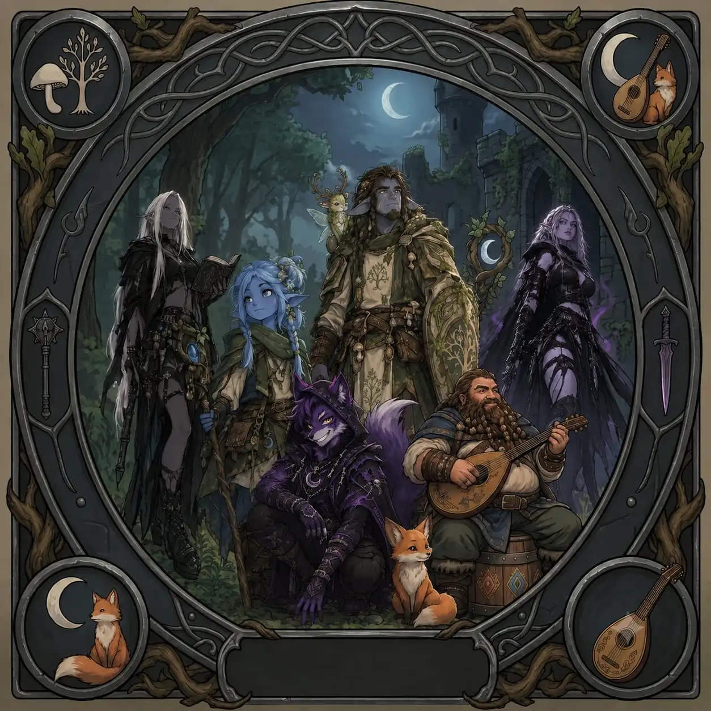

Bienvenido a D&D HUB
Únete a una comunidad de aventureros, crea tus propias campañas y comparte increíbles experiencias de todo el mundo.
- Crear una partida: Diseña tus propias aventuras y organiza sesiones a tu medida.
- Unirse a una partida: Encuentra mesas abiertas según tu nivel y disponibilidad.
- Gestionar campañas: Lleva el control de sesiones, notas y progreso del grupo.
- Crear personajes: Prepara tus héroes y ten sus datos siempre a mano.
- Chatear con otros jugadores: Coordina horarios y estrategias con tu grupo.
- Consultar reglas básicas: Resuelve dudas rápidas durante la partida.

Recurso recomendado
Descubre reglas, personajes, campañas y herramientas oficiales en D&D Beyond.
Visitar D&D Beyond